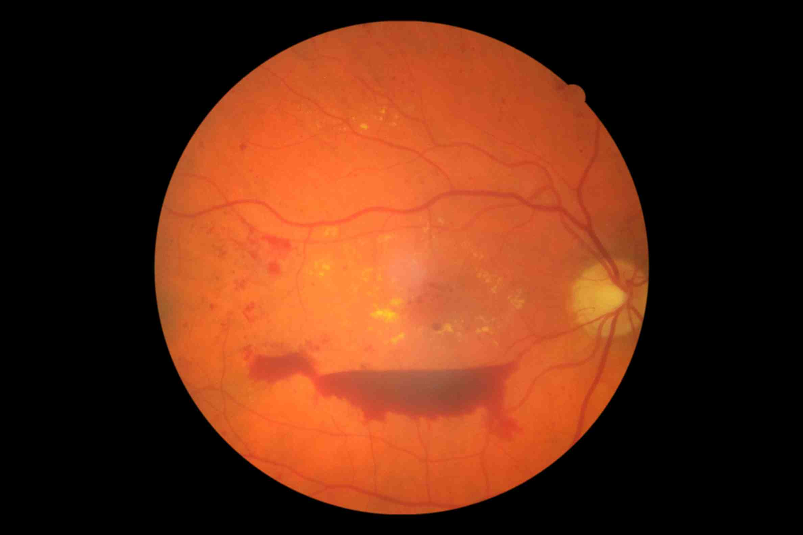

Few of my projects I worked with before are listed below:

Weapon Detection using a bounding box:
present the entire project to my classmates. I didn't have to create this project entirely from scratch.

Pandamic Information Mining:
information about the situations during the pandemic, such as the number of deaths, cases, etc. in any specific place by using
Twitter Api to collect tweets from Twitter.

Diabetic Retinopathy:
Diabetic Retinopathy is a condition when the patient starts loosing his/her vison due to diabetes. My team and I created our own
Res-W net by combining to Res-U networks thus providing a better accuracy for the disease. We also won the second place out of all
the projects in our department.
Diabetic Retinopathy:
Res-W net by combining to Res-U networks thus providing a better accuracy for the disease. We also won the second place out of all
the projects in our department.